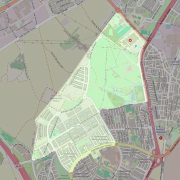

Jesús y San Martín
- Arciprestazgo
- Getafe
- Población
- Getafe
- Dirección postal
- Avda. Juan Carlos I, 3
- Código postal
- 28905
- Extensión
- 2,43 km² (243 ha)
- Teléfono
- 916 840 374
- Correo electrónico
- jesusysanmartin@gmail.com
- Información demográfica
- De la parroquia · De la población (Getafe) · Del arciprestazgo (Getafe)


Descargar mapaLímites según decreto
Partiendo de la confluencia de la carretera de Getafe a Leganés (M-406) con la autovía Madrid-Toledo (A-42), arrancan por el eje de la autovía Madrid-Toledo (en dirección sureste) hasta la intersección imaginaria con la Avda. Adolfo Suárez; continúa por el eje de la Avda. Adolfo Suárez en dirección oeste hasta la confluencia con la calle Arcas del Agua; continúa por el eje de la Calle Arcas del Agua hasta la plaza Juan Carlos I; desde allí continúa por la Avda. Juan Carlos I, en dirección oeste, incluyendo todos los números de dicha calle hasta la intersección con la calle Fuente de Antón Merlo; continúa por el eje de la calle Fuente de Antón Merlo en dirección noroeste hasta su confluencia con la calle Islas del canal; sigue por el eje de la calle Islas del canal en dirección oeste hasta su confluencia el límite del término municipal de Getafe; continúa por los límites de los términos municipales de Getafe y Leganés (en dirección noroeste y noreste) y por el eje de la carretera Getafe-Leganés (en dirección sureste) hasta la confluencia con la autovía Madrid-Toledo (A-42), punto de partida.
Desarrollos urbanísticos previstos
- Getafe: Plan Vive (10 promociones): 864 viviendas ya entregadas · repartidas entre varias parroquias
Las cifras y sus fuentes están en la ficha de cada desarrollo, en la sección «Previsión de desarrollos urbanísticos».